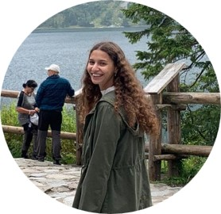

נעים להכיר!

יובל גולדשטיין
מאור קרטה
מי אנחנו?
אנו סטודנטים בשנה א' תשפ"ב בפקולטה לטכנולוגיות למידה,
האתר אופיין ועוצב במסגרת פרויקט סיום בקורס פיתוח אתרי אינטרנט.
האתר פותח ב- HTML5 ו- CSS3 תוך התחשבות בעקרונות נגישות אתרים.
על האתר:
אתר בוסר הוקם על מנת לרכז במקום אחד את כל המידע על יקבים מומלצים ברחבי הארץ,
לפני חלוקה לאזורים- דרום, צפון ומרכז.
בתור חובבי יין מושבעים היה חסר לנו אתר כזה בשוק ולכן החלטנו להרים את הכפפה וליצור
אתר כזה בעצמנו.